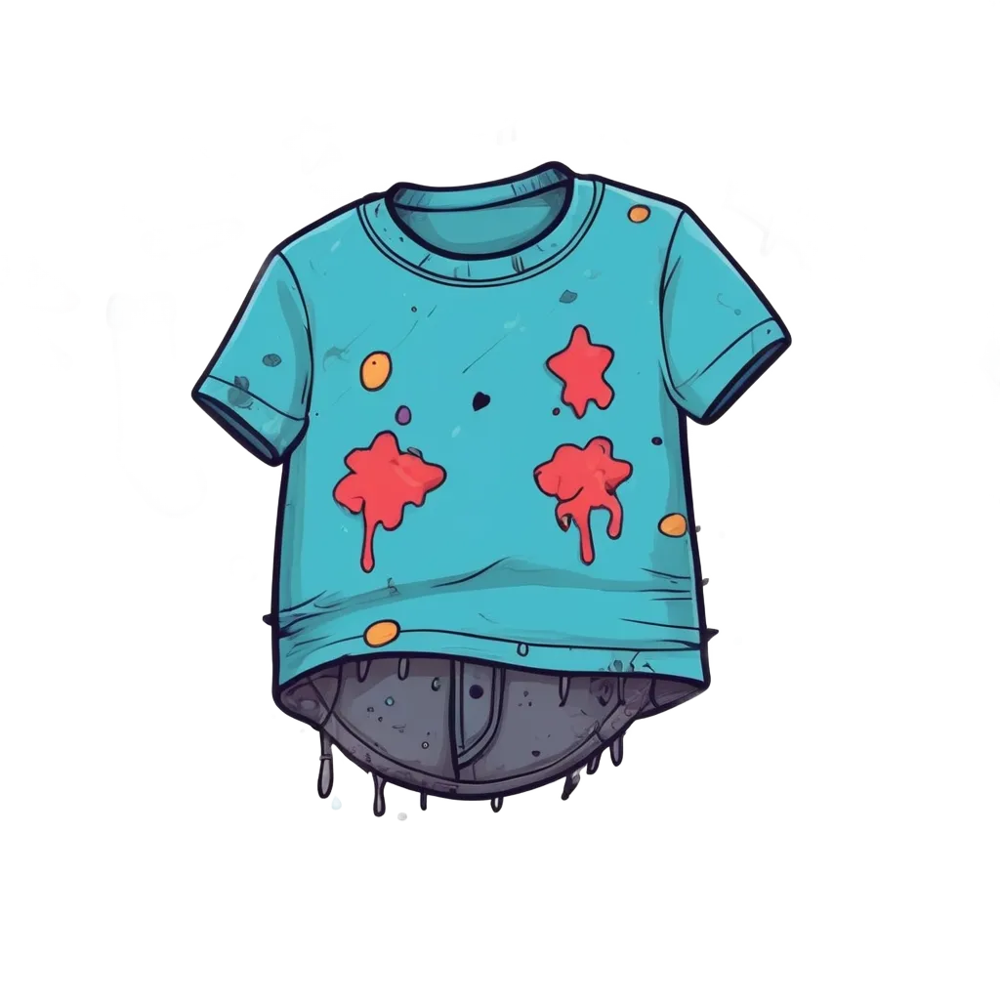

Halo! Senang bertemu dengan Kalian!
Apakah Anda pernah mencuci baju sendiri?

Kalau ada noda yang susah hilang, biasanya pakai apa ya?
Pilih maksimal 4 pilihan (minimal 2)
Dipilih: 0/4
Jawaban yang Benar: Soda Kue + Cuka Dapur
Soda Kue bisa menyerap bau dan membantu mengangkat noda berminyak.
Cuka Dapur bisa melarutkan kotoran yang menempel dan bekerja sama dengan soda kue.
Mari kita coba cara membersihkan noda yang mudah!
Pilih Cara Mencuci yang Ingin Dicoba!
Tarik ke sini
Hasil Eksperimen
Kesimpulan
Menggunakan bahan yang tepat bisa membuat pekerjaan mencuci lebih mudah. Tapi ingat, jangan pakai terlalu banyak bahan kimia karena bisa merugikan kesehatan dan lingkungan.
Tips Penting
Air bekas soda kue & cuka dapur aman untuk tanaman. Tapi air bekas deterjen bisa mencemari air jika dibuang sembarangan. Buanglah di tempat yang tepat!